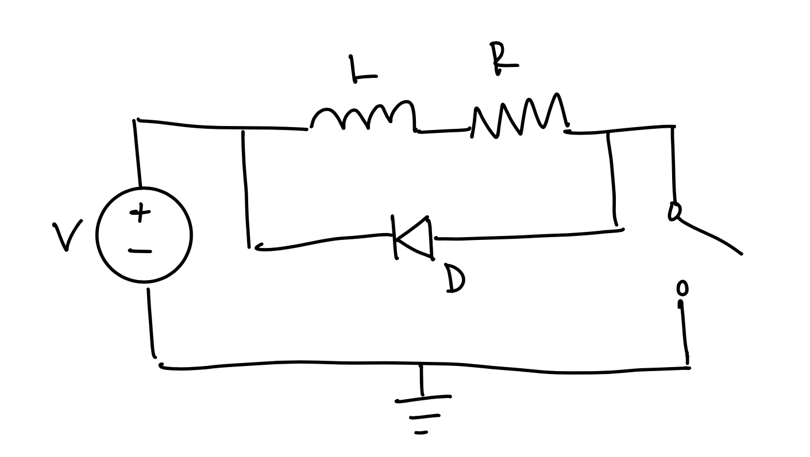

Circuit in Action
Here is a video of my circuit in action:

Based on the way I coded my circuit, the LED will begin blinking when I touch my keys. When untouched, the LEDs will remain off. This is demonstrated in the video above.
Additional Questions
(1) The absolute maximum amount of current between pins 2 and 3 for a continuous drain current is 37.2 for Tc +25 degrees C, and 29.8A for Tc +100 degrees C. The absolute maximum amount of current between pins 2 and 3 for a pulsed drain current is 80A.
(2)
(3) Psuedo Code
// First, I will start by defining the motor control pins
const int enableA = 9;
const int enableB = 10;
const int motorA1 = 8;
const int motorA2 = 7;
const int motorB1 = 6;
const int motorB2 = 5;
void setup() {
// Then, set pins as outputs
pinMode(enableA, OUTPUT);
pinMode(enableB, OUTPUT);
pinMode(motorA1, OUTPUT);
pinMode(motorA2, OUTPUT);
pinMode(motorB1, OUTPUT);
pinMode(motorB2, OUTPUT);
// Motors must be kept at HIGH in order to work
digitalWrite(enableA, HIGH);
digitalWrite(enableB, HIGH);
}
void loop() {
// Moving both motors forward
digitalWrite(motorA1, HIGH);
digitalWrite(motorA2, LOW);
digitalWrite(motorB1, HIGH);
digitalWrite(motorB2, LOW);
delay(2000);
// Moving both motors backward
digitalWrite(motorA1, LOW);
digitalWrite(motorA2, HIGH);
digitalWrite(motorB1, LOW);
digitalWrite(motorB2, HIGH);
delay(2000);
// Moving one forward, and one backwards
digitalWrite(motorA1, HIGH);
digitalWrite(motorA2, LOW);
digitalWrite(motorB1, LOW);
digitalWrite(motorB2, HIGH);
delay(2000);
// Moving one backwards,and one forward
digitalWrite(motorA1, LOW);
digitalWrite(motorA2, HIGH);
digitalWrite(motorB1, HIGH);
digitalWrite(motorB2, LOW);
delay(2000);
}